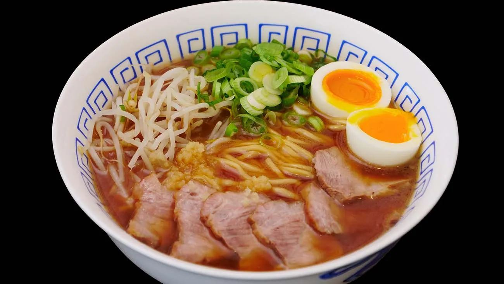

Ramen

About gongura mutton
Ramen is a Japanese noodle dish. It consists of Chinese-style alkaline wheat noodles (中華麺, chūkamen) served in a meat-based broth, often flavored with soy sauce or miso, and uses toppings such as sliced pork (叉焼, chāshū), nori (dried seaweed), menma, and scallions. Ramen has its roots in Chinese noodle dishes.[1] Nearly every region in Japan has its own variation of ramen, such as the tonkotsu (pork bone broth) ramen of Kyushu, and the miso ramen of Hokkaido. Mazemen is a ramen dish that is not served in a soup, but rather with a sauce (such as tare).
Ingredients
-
2 chicken breasts (boneless, skin-on)*
-
kosher salt and freshly-ground black pepper, to season
-
1 Tbsp unsalted butter
-
2 tsp fresh ginger, minced
-
1 Tbsp fresh garlic, minced
-
3 Tbsp low-sodium soy sauce
-
2 Tbsp mirin
-
4 cups rich chicken stock
-
1 oz dried shitake mushrooms (or 1/2 cup fresh)
-
1 to 2 tsp sea salt, to taste
-
2 large eggs
-
1/2 cup scallions, sliced
-
2 (3 oz) packs dried ramen noodles
-
optional: fresh jalapeño or chili slices, for serving
Steps:
Cook the chicken
-
Preheat the oven to 375℉. Season the chicken generously with salt and pepper.
-
Melt the butter in a large oven-safe skillet over medium heat. Add the chicken, skin-side down, and cook until the skin is golden brown and releases easily from the pan, about 5-7 minutes. Flip the chicken over and cook for another 4-5 minutes, until golden.
-
Transfer the skillet to the oven and roast for 15-20 minutes, until the chicken is cooked through. Remove from the oven, transfer the chicken to a plate, and cover with foil until ready to serve.
Make the Ramen Broth
-
Heat the oil in a large pot over medium heat until shimmering. Add the garlic and ginger, and cook for a few minutes until softened. Add the soy sauce and mirin, and stir to combine. Cook for another minute.
-
Add the stock, cover, and bring to a boil. Remove the lid, and let simmer uncovered for 5 minutes, then add the dried mushrooms. Simmer gently for another 10 minutes, and season with salt, to taste.
Make the Soft boiled eggs
-
Fill a pot with enough water to cover the eggs, and bring to a boil. Gently lower the eggs (still cold from the fridge) into the boiling water, and let simmer for 7 minutes (for a slightly-runny yolk) or 8 minutes (for a soft, but set-up yolk).
-
Meanwhile, fill a large bowl with ice water. When the timer finishes, transfer the eggs to the ice bath to stop the cooking process. Wait at least 5 minutes, or until cool enough to handle, then carefully peel away the shell and slice in half, lengthwise. Set aside until ready to serve.
Assemble the Ramen Bowl
-
Meanwhile, chop the scallions and jalapeño (if using). Slice the chicken into thin pieces. Set aside. When the eggs finish cooking, add the ramen noodles to the boiling water.
-
Cook for 2-3 minutes, until soft, then divide the noodles into two large bowls. Add the sliced chicken and the ramen broth. Top with the fresh scallions, jalapeño, and the soft boiled egg. Serve immediately. Enjoy!!
Notes
Ask your butcher to remove the rib bone from the chicken breasts (leaving the skin on), or use bone-in, skin-on chicken breasts and increase the oven roasting time 5-10 minutes, as needed. You can also cut your ramen prep time in half by using a store-bought whole rotisserie chicken, simply slice off as much as you wish, and add to the ramen.